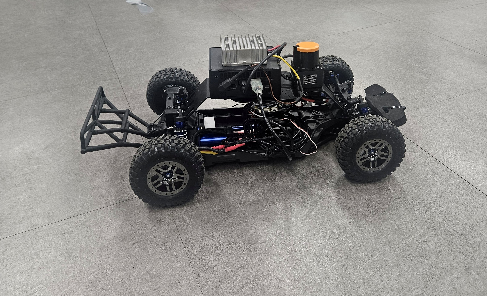
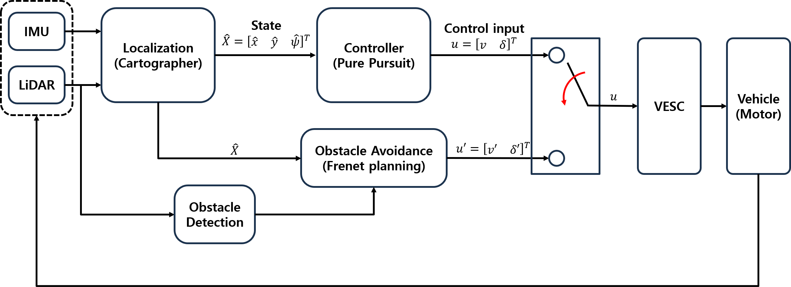
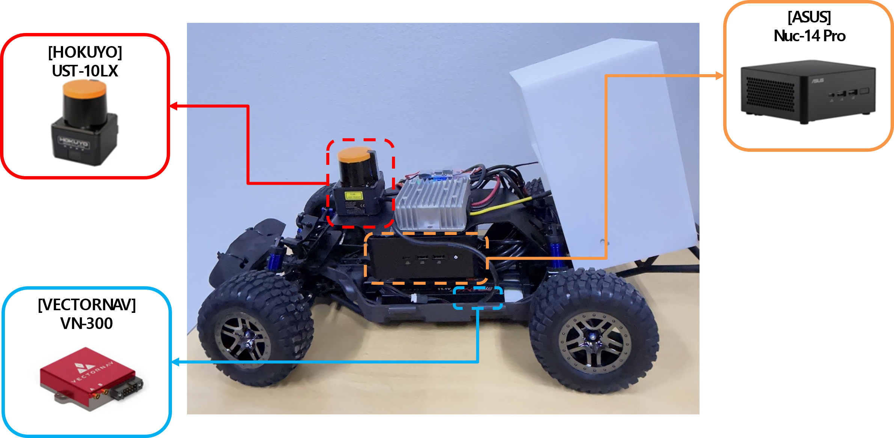
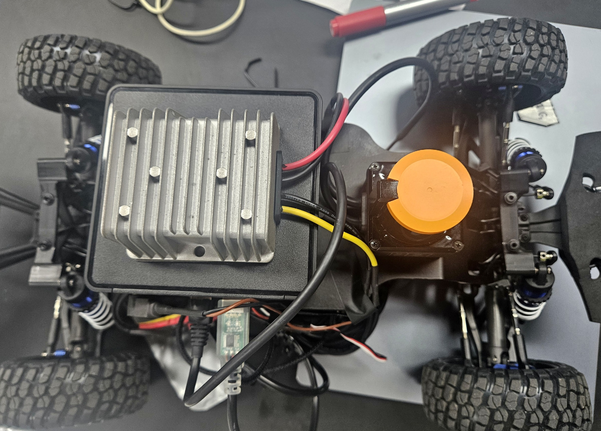
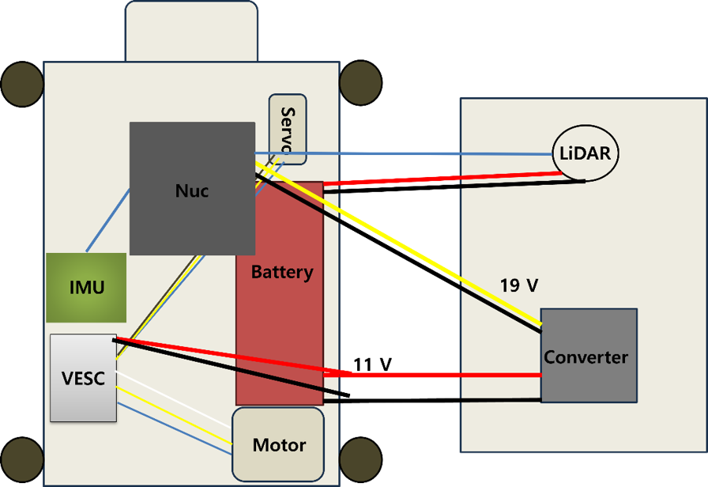
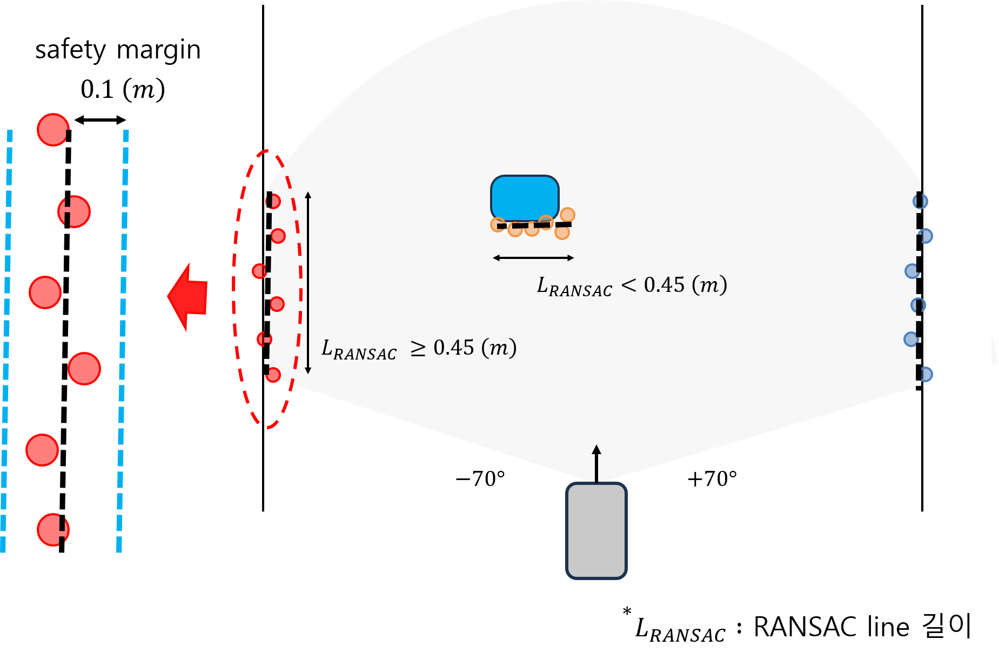
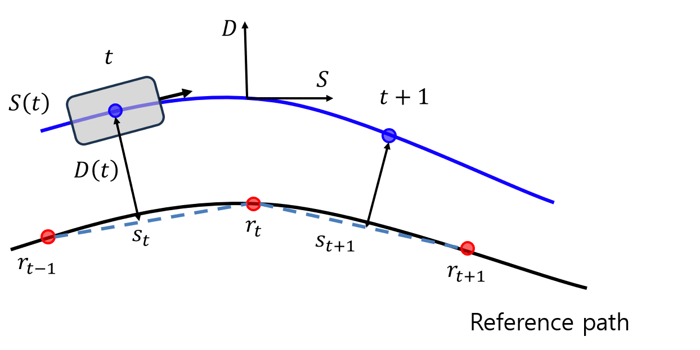
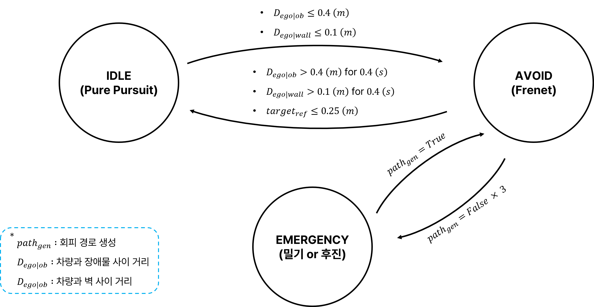
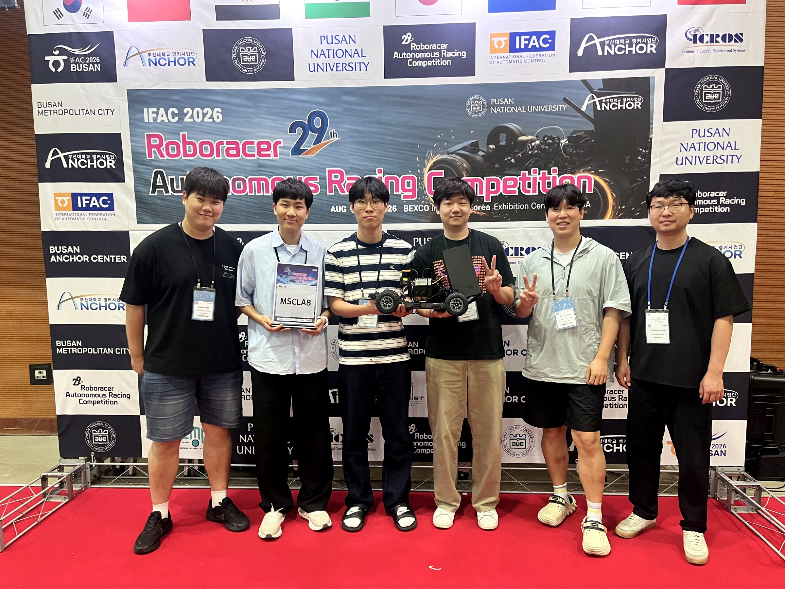

Keep only the LiDAR region needed for driving decisions
29TH ROBORACER AUTONOMOUS RACING COMPETITION
IFAC 2026 RoboRacer: obstacle perception and avoidance planning
I separated track walls from obstacles in Hokuyo 2D LiDAR scans and built a planner that picks, from up to 30 Frenet candidates, a collision-free path that can return to the reference line. The system ran on a ROS 2 race car.
TOP 16International autonomous race
Round of 16 among 56 teams
Round of 16 among 56 teams
- Competition
- IFAC 2026, BEXCO, Busan
- Period
- 2026.07–2026.08
- My role
- LiDAR perception, Frenet avoidance planning, FSM
- Team
- MSCLAB, five members

01 / SYSTEM
System and my scope
The car ran a pipeline of IMU and LiDAR localization, obstacle perception, avoidance planning and Pure Pursuit control. I owned obstacle avoidance: LiDAR perception, the Frenet local planner and the FSM, covering everything from the incoming LiDAR scan to the selected avoidance path.
Teammates handled localization, path tracking and control.
I first validated the perception and Frenet planner in MATLAB, ported them to Python for the ROS 2 car, and added features to fix problems found in track testing.

Part 1Perception
LiDAR clustering, RANSAC line extraction, wall/obstacle classification
Part 2Frenet PlannerCandidate generation, collision checks, cost comparison and path selection
Part 3FSMSwitching between reference tracking, avoidance and recovery
02 / VEHICLE
Race car configuration



The detection box is a vertical panel that gives opponents’ 2D LiDARs a surface to detect our car reliably.
03 / PERCEPTION
Separating walls from obstacles
I clustered the forward ±70° LiDAR scan with DBSCAN and fitted a representative line to each cluster with RANSAC. Lines of 0.45 m or longer are track walls; shorter ones are obstacles. Obstacles, whose shape is less certain, get a wider safety margin than walls.

Group neighboring points into objects using a cKDTree
Fit a representative line to clusters with at least six points
LRANSAC ≥ 0.45 m is a wall; shorter is an obstacle
Expand along the line normal: walls 0.10 m, obstacles 0.24 m
Fixed track walls get 0.10 m; obstacles, with less certain shape and position, get 0.24 m.
04 / PLANNING
Choosing a Frenet candidate

Candidate path cost
mini 0.20 Jjerk,i + 10.0 Jsafety,i + 1.50 Joffset,i + 1.00 Jfinal,i + 0.05 Jtime,k
i = 1, 2, …, 15, k = 1, 2
- Jsafety
- Clearance from obstacles
- Joffset
- Lateral deviation from the reference path
- Jjerk
- Smoothness of steering changes
- Jfinal
- Return to the reference path after avoidance
- Jtime
- Time to reach the avoidance path
Lateral offsets 0.0 to ±0.7 m in 0.1 m steps / planning horizons 1.5 s and 2.5 s
05 / FSM
Avoidance state transitions

06 / TRACK TEST
Track testing
The goal was to finish 10 laps quickly without hitting obstacles. I analyzed logs from track runs to tune the wall and obstacle safety margins and the replanning interval.
07 / TROUBLESHOOTING
Problems found on the real car
Separate fence sections merged into one wall
RANSAC joined separate fence sections into one line, so an open passage was treated as blocked.
Added MaxInlierGap to split lines where inliers are far apartInflating walls like obstacles closed off the passage
With the same margin on walls and obstacles, passable space on the narrow track disappeared.
Separate margins: 0.10 m for walls, 0.24 m for obstaclesValid paths on paper hit obstacles on the car
Candidates that barely skirted an obstacle’s safety zone were valid in computation, but tracking error on the real car caused collisions.
If any candidate has at least 0.05 m clearance, choose the lowest cost among those onlyTwo-stage selection based on MinimumClearanceThe car stopped and kept failing to generate a path
After repeated failures, the car stayed in place and kept failing the same way.
Detect consecutive failures and run EMERGENCY recovery08 / RESULT
Race result and failure analysis
Top 16
International autonomous race with 56 teams
August 24–27, 2026, BEXCO, Busan

Localization failure after a collision
After the competitionParticle Filter initial localization → switch back to Cartographer
A recovery method was implemented and tested in the lab after the competition: re-estimate the initial pose with a Particle Filter, then switch back to Cartographer and resume path tracking.